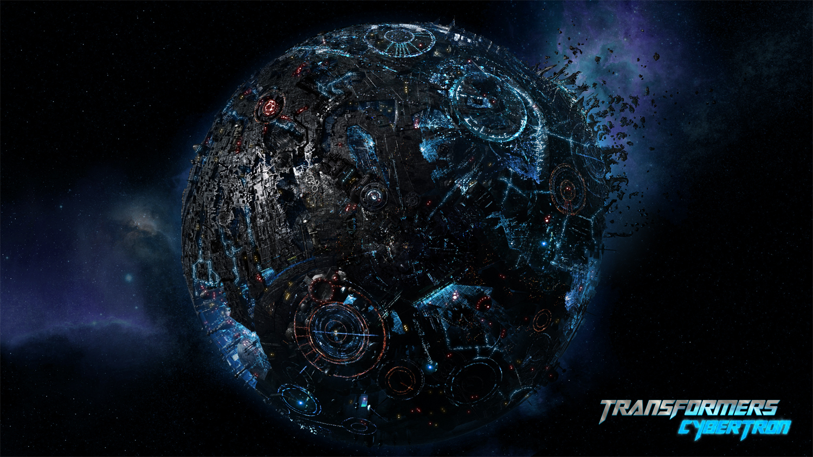

Optimus Prime, also known as Orion Pax, embodies strong moral values, exceptional leadership, and strategic prowess. Equipped with advanced weaponry and martial arts skills, he champions justice and peaceful coexistence with humans. As bearer of the matrix of Leadership, he leads the Autobots, engaged in an eternal conflict against the Decepticons. Originating from the ancient Dynasty of Primes, Optimus Prime's selfless sacrifice and rallying cry of "Till All are One" were pivotal in defeating Unicron. Reborn as Orion Pax, he embraced his new identity, only to reclaim his role as Optimus Prime to confront the Decepticons led by his former friend, Megatron, igniting the Great War on Cybertron. While his origins and persona may vary across different storylines, this depiction remains consistent throughout iterations of the Transformers universe.
The Autobots are a fictional faction of sentient robots in the Transformers multimedia franchise. The Autobots are living robots from the planet Cybertron who, like most Transformers, are each imbued with a unique "life force" known as a "spark." Led by Optimus Prime in most stories, the Autobots believe "freedom is the right of all sentient life" and are often engaged in a civil war with the Decepticons, a faction of transformers dedicated to military conquest and usually headed by Megatron.In a mirror universe portrayed in Transformers: Shattered Glass, the Autobots are villains opposed by the heroic Decepticons
Cybertron is a fictional planet in the Transformers franchise that serves as the homeworld of the Transformers and their creator, Primus. It's a technological world made of shining metal, with vast metallic plains, towering cities, spiraling metal mountains, and bottomless chasms. The planet is located in the Alpha Centaurai star system.
created by: Isadeen Adams